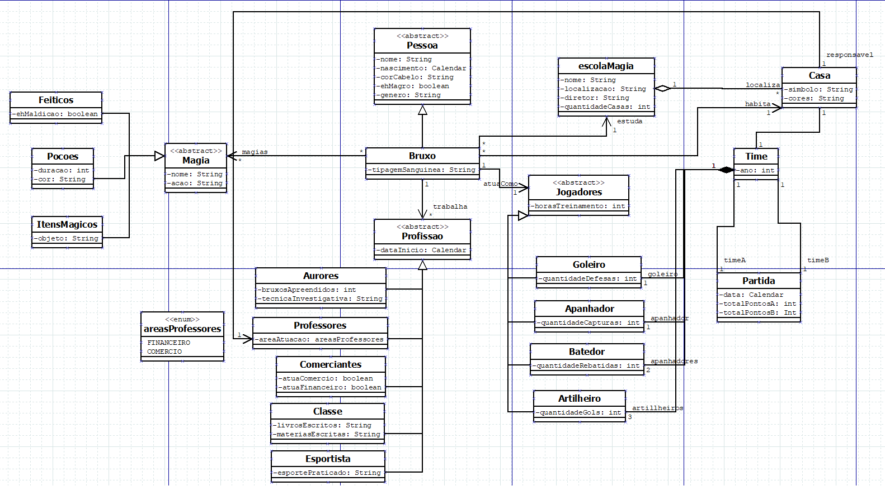

Projeto de Software

Descrição do Projeto
O mundo pode ser definido a partir de classes. Mas o que são classes? Classes apresentam por definição estruturas ou modelos abstratos que definem objetos do mundo real ou conceitual em termos de atributos (dados) e métodos (comportamentos). Ou seja, a utilização dessas é extremamente útil para definir relações no mundo, uma vez que uma classe pode apresentar qualquer tipo de vínculo com outra. Pessoas possuem carros. Empresas possuem departamentos.
Dessa forma, para representar um software, utilizamos classes. Entretanto, essa modelagem não é simples. Abaixo podemos observar o projeto do mundo de Harry Potter, e é possível perceber a quantidade de camadas desse trabalho.
Assim, compreendemos que diversos sistemas podem ser modelados através da programação orientada a objetos, evidenciando assim sua aplicação. Abaixo é possível fazer o download de alguns dos meus projetos na área.
← Voltar ao portfolio